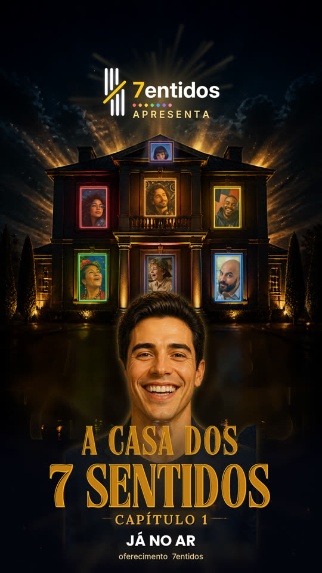

7entidos apresenta
A Casa dos
7 Sentidos
Capítulo 1
Os 7 moradores
Cada um é um sentido. Cada um foi pintado no estilo de um grande pintor. Toque para conhecer.
Toque no card para virar ↻
Capítulo 1

Capítulo 1
Cada um é um sentido. Cada um foi pintado no estilo de um grande pintor. Toque para conhecer.
Toque no card para virar ↻
